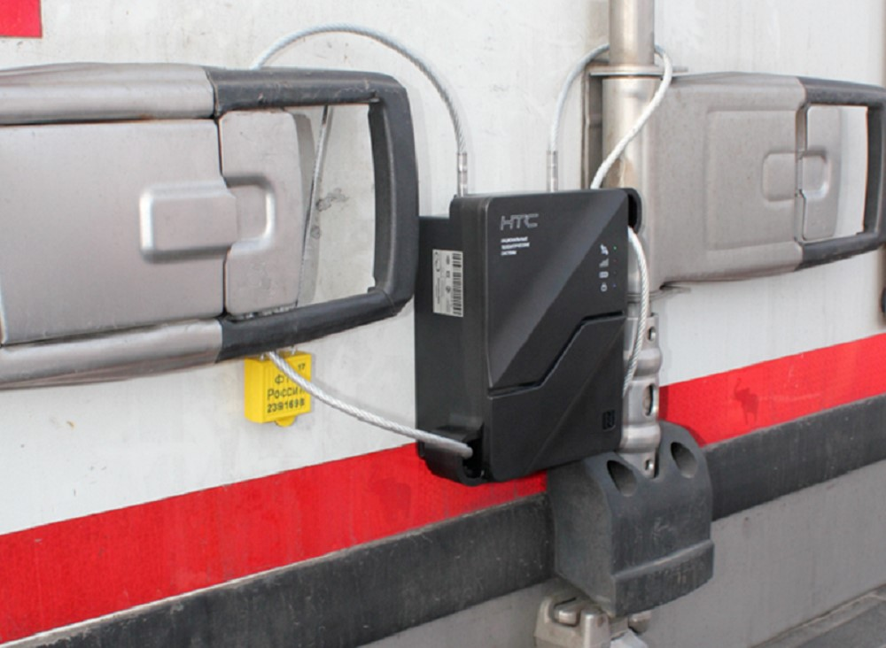

В настоящее время рынок электронных средств контроля при транспортировке грузов предлагает широкий спектр продукции, одним из продуктов являются электронные навигационные пломбы. Система отслеживания перевозок и перевозки с навигационной пломбой освещаются данным разделом сайта.
Система отслеживания перевозок товаров автомобильным и железнодорожным транспортом, использующая электронные навигационные пломбы, функционирует на основе технологии глобальной спутниковой навигации «ГЛОНАСС». Система включает электронные навигационные пломбы, программное обеспечение, сеть обслуживания, центр обработки данных и мобильные терминалы. Электронные навигационные пломбы конструктивно состоят из двух частей: механической пломбы и электронного модуля (блока). Основная функция электронного модуля – позиционирование местонахождения пломбы и контроль маршрута перевозки с навигационной пломбой.
Работа системы отслеживания перевозок с навигационной пломбой позволяет открыть границы России для международного транзита, использование навигационных пломб при транзите позволяет увеличить его объемы, создает необходимые механизмы для снижения административных барьеров при пересечении границ. Разработана система российским оператором пломбирования ООО “ЦРЦП”.
Система решает ключевые задачи: скорость и безопасность доставки грузов, достоверность информации о нахождении груза и его сохранности. Внедрение системы отслеживания перевозок с навигационной пломбой – масштабный национальный проект, который на первом этапе за счёт использования пломб при транзите обеспечивает контроль перевозок санкционных групп товаров, а также может применяться для контроля грузового транзита через территорию страны.
Система электронных навигационных пломб создана ООО “ЦРЦП” в целях обеспечения защиты национальных экономических интересов, использования транзитного потенциала и повышения конкурентоспособности транспортной системы России. В дальнейшем на основе системы, за счёт которой будут совершаться перевозки с навигационной пломбой будет сформирован «зеленый коридор» – самая быстрая транзитная зона между Азией и Европой, технологически обеспечиваемая применением навигационных пломб при транзите через Россию.
Российская IT-компания общество с ограниченной ответственностью «Центр развития цифровых платформ» является 100% дочерним предприятием ООО «РТ-Инвест Транспортные Системы» и входит в группу компаний, успешно реализующих в России проекты в сфере транспортной телеметрии и мониторинга перевозок с использованием уникальных современных цифровых технологий на основе глобальной навигационной спутниковой системы «ГЛОНАСС, например, реализация процесса перевозки с навигационной пломбой.
Мониторинг в реальном времени обеспечивает постоянный контроль за перевозкой, что дает возможность оперативно реагировать на тревожные события, которые могут случиться на пути следования, поэтому электронные навигационные пломбы применяются и для мониторинга грузовых перевозок по территории России автомобильным и железнодорожным транспортом.

В соответствии с Указом Президента Российской Федерации №290 от 24.06.2019 ввоз
на территорию Российской Федерации санкционных групп товаров при осуществлении
транзитных международных автомобильных и железнодорожных перевозок возможен
при условии применения средств идентификации (пломб).
Центр развития цифровых платформ является единственным российским Оператором пломбирования, сертифицированным Министерством Транспорта РФ в соответствии с приказом Министерства транспорта №13 от 14.01.2020.
В январе 2021 года операторы навигационных пломб России, Беларуси и Казахстана подписали соглашение о развитии единой системы таможенного транзита в ЕАЭС с использованием электронных навигационных пломб.
Электронные навигационные пломбы в России предоставляются оператором ООО «Центр развития цифровых платформ», в Беларуси — ОДО «Белнефтегаз», в Казахстане — ТОО «Silk Way monitoring». Как следует из подписанного соглашения, компании будут работать над интеграцией существующих национальных систем отслеживания перевозок товаров: обмениваться аналитической, статистической, научно-технической и правовой информацией, унифицировать бизнес-процессы и технологические решения для формирования единого цифрового транспортного пространства трех стран.
В результате, в ЕАЭС со временем смогут полностью перейти на цифровое управление грузовыми перевозками: благодаря применению навигационных пломб при транзите перевозчики и грузоотправители смогут выбирать оптимальные способы доставки товаров, эффективно планировать маршруты, отслеживать местонахождение и состояние грузов. В свою очередь, это позволит ускорить оформление перевозок товаров, оптимизировать таможенные процедуры, минимизировать временные и финансовые затраты.
В то же время и Евразийская экономическая комиссия уже подготовила проект соглашения, в разработке которого принимает участие ООО “ЦРЦП”, согласно которому в ЕАЭС будут применяться электронные навигационные пломбы для отслеживания перевозок товаров. Планируется, что в рамках соглашения будет разработано два международных договора: один как раз таки охватит вопросы использования пломб при транзите, другой — создание единой транзитной системы ЕАЭС.
Источники: